Form Kontrolleri
Giriş
Nesne yönelimli programlamanın en somutlaştığı yer olarak
ben şahsen kontrolleri görüyorum. Bunlar, gerçek dünya nesnelerine çok benziyorlar. Excelle
çalışırken, bir hücre, bir sayfave ya workbook'un kendisi Excel ile o
kadar bütündür ki onları içselleştirmişizdir, bu yüzden onları bir nesne gibi görmek bazen biraz zor
olabilir. Ama eminim bu sayfada nesne yönelimli programlama konusunu
iyice anlamış olacaksınız.
Zira birçok progralama dilinde ve onlarla geliştirme yaptığımız
IDE'lerde olduğu gibi bu nesnelerin özelliklerini Properties
penceresinden değiştirebileceğiz ve bu deneyim de bizi programlama
dünyasına biraz daha yakın hissettirecektir. Gerçi kontrollerin propertylerine
sadece properties penceresinden(DesginTime) değil kodların çalışması
sırasında da (Runtime) erişebileceğiz. Ve yine gerçi Nesne Yönelimli
olmak demek, sadece özelliklerin Properties'ten değiştirilebilmesi demek
değildir, bundan çok daha büyük bir kavramdır ancak yeni başlayanlar
için kolaylık sağladığını düşünebiliriz.
Bu sayfada temel olarak baz alacağımız örnek dosyaya
buradan
ulaşabilirsiniz.
Kontrol Tipleri
Excel'de 2 tür kontrol bulunmaktadır.
-
Form kontrolleri: Worksheetler üzerine konan ve sınırlı
fonksiyonaliteye sahip kontroller.
-
ActiveX kontrolleri:Daha gelişmiş
fonksiyonaliteye sahip olan, hem Worksheetler hem de UserFormlar
üzerine konan kontrollerdir.
Niye 2 tür kontrol grubu var diye soracak olursanız, önceleri sadece Form kontrolleri vardı,
sonra ActiveX kontrolleri geldi diye cevaplanabilir.
Aşağıda Developer menüsünden ikisinin de içeriğini görebilirsiniz.
Birbirine çok benzeyen bu kontrollerin temel bazı farkları bulunuyor.
Bunlara aşağıda değiniyorum.
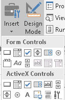
Worksheet/Form Kontrolleri
Bunlar, Excel arayüzünde Developer menüsü altında bulunurlar.
Bunların VBA olmadan genel kullanımlarını burada ele almayacağız.
Bu detayları şu sayfada bulabilirsiniz. VBA'siz
de kullanılan bu kontroller oldukça faydalı
kontrollerdir ve özellikle dashboard tarzı çalışmaların yaratımında oldukça kullanışlıdırlar.
Bunların VBA'li kullanımında ise
ana olay(event) için makro oluşturulur. Mesela sayfa üzerine bir Button(düğme) yerleştirip o düğmenin
Click eventinin tetiklenmesiyle(özetle ona tıklayarak) başka bir makroyu
çalıştırma amaçlı kullanabiliriz.
Bunların VBA'li kullanımdaki tek avantajları Windows'ta
oluşturduğunuz bir dosyanın Apple Mac bir bilgisayardaki Excel'de de
çalışacak olmasıdır. Zira Mac işletim sistemi ActiveX kontrolleri
desteklemezken bunları destekler.
NOT:Gariptir ki Excelin 5.0 versiyonundan beri kullanılamayan
TextBox kontrolü(ve ne olduğunu bilmediğim diğer 2 kontrol) pasif olarak
ilgili menüde hala görünmektedir.
Makro atama
Bu kontrollere sağ tıklanıp Assign Macro>New denince default event için kod
ekranı çıkar. Oraya da istediğiniz kodu yazarsınız.
Metin değiştirme
Uygun olan kontroler için Sağ tıklanıp Edit Text denerek ilgili
kontrolün üzerinde görünen metin değiştirilebilir.
ActiveX Kontrolleri
ActiveX kontrolleri hem worksheetlerde hem de VBA UserForm'ları
üzerinde kullanılırlar. VBA fonksiyonalitesi olarak worksheet formlarına
göre çok daha üstündürler, ancak Excel fonksiyonalitesi olarak ise
worksheet form kontrolleri daha kullanışlıdır. O yüzden size tavsiyem
bunları sadece UserFormlar üzerinde kullanın, diğerlerini de Excelin bir
hücre grubuyla ilişkendirmek için VBA'siz şekilde kullanın.
Bir düğmeyle bir makro çalıştırmak için de yine worksheet/form
kontrollerini kullanbilirsiniz demiştik. Başka neler yapabilirsiniz. Listbox/Combobox'tan seçilen
değere göre, seçim yapılır yapılmaz o seçime ait bir veritabanı
sorgulaması yapılabilir. Mesela ürün kodlarının olduğu bir Listbox'ta,
seçilen ürüne ait özellikler boş sayfaya yazdırılabilir, yeya ikinci bir
Listbox'ın
içeriği doldurulabilir, mesela alt kategorideki ürünlerle.
Yukarıda belirttiğim gibi ActiveX kontrollerinin en büyük
dezavantajı Mac kullanan bir bilgisayara Windows'ta hazırlanmış bir dosya
göndermek olacaktır. Ancak amacımız, ilgili kontrollerin ana eventi dışında
bir eventi kullanmaksa o zaman başka çareniz yoktur, mecburen ActiveX
kontrolü kullanacaksınız. Mesela, CommandButtonun sadece click eventini kullanacaksanız
Worksheet Form kontrolü iş görür, keza
Listbox'ın change eventi yeterliyse yine Worksheet Form kontrolü iş
görür, ama MouseUp eventini kullanacaksanız ActiveX kullanmak
zorundasınız.
Aşağıda, toolboxta default olarak bulunan tüm kontrollerin
listesini görebilirsiniz.
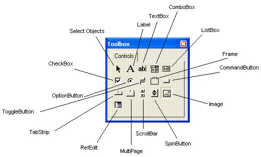
Bunların önemli olanlarının detay özelliklerine
aşağıda yer vereceğim, diğerlerini sizin keşfetmeniz gerekiyor.
Bilgisayarlarımızda, Excel ve diğer Microsoft programlarınca kullanılan
başka ActiveX kotrolleri de vardır. Bunları, ActiveX kontrollerinin
olduğu blokta, sağ
alttaki(aşağıda kırmızlı işaretli) buton ile görebilirsiniz ama
bunların çoğu worksheetlerde kullanılamaz. Zaten eklemeye
çalışsanız bile bi uyarı çıkacaktır. Hangilerinin kullanılabileceğine dair bir liste var mı,
açıkçası bilmiyorum. İlgisini çekenler kurcalayabilir.
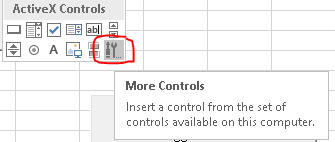
Bununla beraber bunların hepsi Userformlar üzerinde kullanılabilirler. Bunun
için herhangi bir kontrolün üzerine sağ tıklayıp Additional Controls'e tıklamak
yeterlidir.
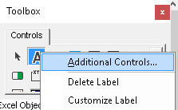
Worksheet'te bir kontrole makro atama
Developer'dan Design Mod yapılıp sağ tıklanır. View Code
denir. İlk başta default(temel) event gelir, istenen event
seçilerek kod yazılır.
Worksheet'te metin değiştirme
Developer'dan Design Mod yapılıp sağ tıklanır. Properties'ten
Caption veya Text özelliği değiştirilir.
Veya yine objeye sağ tıklanıp XXXObject>Edit denilerek doğrudan
metin editlenir.
Karşılaştırma
-
Excel hücreleriyle etkileşim, Form kontrolleriyle
kolayca sağlanır, VBA'siz kullanılır.
-
Temel event(button için Click, Listbox için Change) kullanıp Mac
bilgisayara gönderme ihtimalimiz varsa:Form kontrol
-
Temel event dışındaki eventler için ActiveX kontrolleri
kullanılır
-
VBA Userformlar üzerinde mecburen ActiveX kontrolleri
kullanılır
Sayfanızda 2 tür kontrol de var diyelim. Hangisinin ne tür olduğunu nasıl anlarsınız?
Form kontrollerine sağ tıklayabilirken, ActiveX'lere sağ tıklanamaz,
bunlara sağ tıklamak için Design Mod'da olmalısınız. Diyelim ki o sırada
Design Moddasınız,
bu durumda nasıl anlaşılır? Sağ
tıklayınca formül çubuğunda EMBED(...) diye bi formül çıkıyorsa ActiveX'tir, çıkmıyorsa
Form
kontrolüdür. Aynı zamanda ActiveX'e sağ tıklayınca Properties ve
View
Code çıkarken
diğerinde bunun yerine Assign Macro çıkar.
"
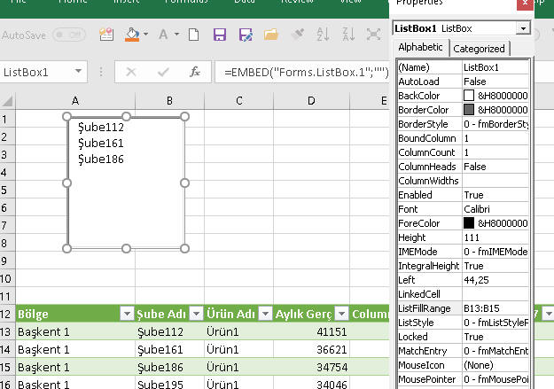
Kontrollerin sayfa davranışını yönetmek
Gerek form kontrollerinin gerek ActiveX kontrollerinin sayfa
üzerindeki konumu, görünürlüğü, aktif/pasifliği gibi özelliklerini
yönetmek için Shape ve OleObject kavramlarını incelemek gerekiyor.
Bu bilgiler, kavramsal olarak buraya uygun olmayıp, onları
şu sayfada
inceleyeceğiz.
Temel Kontroller
Command Button
Kontroller arasında en sık kullanılanı ve en aşina olunanı CommandButton'dur.
CommandButon'un default event'i Click olmakla birlikte başka
eventleri de vardır. Her zamanki yaklaşımımla ben bununla ilgili diğer
eventleri şimdiye kadar kullanmadığım için burda da örneklerini
vermeyeceğim. Arzu eden ve ihtiyaç duyan araştırabilir.
Click event'i ile bir başka makro çalıştırılabileceği gibi, ekrana
bir FileDialog penceresinin gelmesi de sağlanabilir. FileDialog detayına
buradan ulaşabilrsiniz.
Diğer button kullanım amaçları şöyle sıralanabilir:
- MsgBox ile bilgi gösterme
- InputBox ile kullanıcıdan bilgi girmesi/alan seçmesi isteme
- Hücreden bir bilgi okuma
- Hücreye bir bilgi yazdırma
- Veritabanına bilgi yazdırma
- Veritabanından bilgi okuma
- Spin Butonun değerini artırıp/azaltma
- Çeşitli değerleri/nesnelerin içeriklerini resetleme
- v.s
TextBox ve Label
Label
Label en basit kontroldür. Üzerine genelde ya bir açıklama ya da bir
işin sonucunda sonuç mesajı yazdırırız.
TextBox
Kullanıcıdan birşeyler girmesini beklediğimiz kutulardır. Girilen
değerin ne olduğunu Text ve Value özellikleri
ile elde ederiz. TextBox'larda bu iki özellik genelde aynı değeri verir.
Text ve Value farkını aşağıda daha detaylı göreceğiz.
ControlSource:Kutuya, bir hücreden değer ataması yapmak istiyorsak bu
özelliği kullanırız. UserFormlarda pek kullanılmaz.
Multiline:Kutumuz, birden çok satır içerecekse bu
özelliğe True atarız.
EnterKeyBehaviour: Buna True
atandığı zaman Enter tuşu ile bir alt satıra geçebilirsiniz. False
durumundayken alt satıra geçmek için Ctrl+Enter kombinasyonunu
kullanmanız gerekir. Tabi alt satıra geçmesi için Multiline
özelliğine True atanmış olmasını söylemeye gerek yok sanırım.
OptionButton'ları, Check Box'lar ve Çerçeveler
OptionButton ve CheckBoxlar
Option buttonları kullanıcıya birden çok seçenek
içinden birini
seçtirmek için kullanılır. Checkboxlar ise birden çok seçenek içinden
çoklu seçim
yapmaya imkan sağlar. İkisinde de seçenek sayısının az olması tercih
sebebedir, çok seçenek olacağı zaman ListBox veya ComboBox kullanılması
önerilir.
Çerçeveler
Çerçeveler, genelde Option butonları ve CheckBox'ları
gruplamak için kullanılmakla birlikte, ortak özelliği olan bütün
kontrolleri gruplamakta kullanılabilir. Bunlar .Net'taki GroupBox'larla
aynı işlevi görürler.
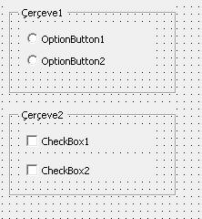
Gruplamanın amacı sadece estetik ve anlamsal bir bütünlük
katmak değil, aynı zamanda çerçeve içindeki tüm kontrolleri tek seferde
enable/disable veya visible/invisible yapmak için de oldukça
kullanışlıdır.
Frame alternatifi
Bir grup OptionButton/CheckBox yaratmanın alternatifi de
bu kontrollerin GroupName özelliğine ortak bi değer atamaktır. Bu şekilde
kullanıldığında biri seçiliyken öbürleri seçimsiz olurlar. Başkaları
önerse de ben bu şekilde bir gruplamayı tercih etmiyorum. Zira yukarda
belirttiğim gibi gruplamanın amacı kontrolleri sadece aynı çatı altında
toplamak değil, tek seferde visible/enable özelliklerini de kontrol
etmektir.
GroupName'i önerenler tarafından öne sürülen avantajlarını
ve benim yorumlarımı şöyle sayabiliriz.
-
Fazladan bir kontrol koymayarak kodun performansını
artırırsınız(Ben bunun ihmal edilebileceğini düşünüyorum)
-
Frame içindeki tüm kontrollerin frame içine
sığdırılması zorunludur, bu da sıkışık bir görüntüye
neden olabilir.
GroupName kullanımında ise kontroller formun istediğiniz yerinde
olabilir(Neden olsun ki, bi seçeneği formun sağ üstüne
diğerini sol üstüne koyacak değilsiniz ki!)
-
Çerçeveli bir görüntü istemiyorsanız kullanışlıdır.
Framede ise transparanlığı bozmuş olursunuz.(Genelde
çerçeve sınırı olur, yani Frame tercih edilmelidir)
Başlangıç ayarları ve seçimler
Bir CheckBox düşünün, ilk başta seçili değil. Bu checkbox
seçildiğinde konuyla ilgili diğer tüm kontrolleri içeren bir çerçeveyi
görünür hale getiriyor. İlk başta bu çerçevenin Properties'ten Visible
özelliğine False atarız ki bunlar ilk başta görünmesin. Şimdi, Formumuz
açıldığında Checkbox'ı seçtiğinizde onla ilgili diğer tüm kontrollerin
de visible olmasını, seçimi tekrar kaldırdığınızda ilgili çerçevenin de
tekrar gizlenmesini istiyoruz. Formumuz ve kodumuz aşağıdaki gibidir.
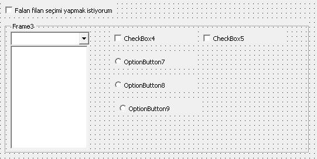
Private Sub CheckBox3_Click()
If CheckBox3.Value = True Then
frAktifPasif.Visible = True
Else
frAktifPasif.Visible = False
End If
End Sub
Yani diyoruz ki, CheckBox3(Falan filan..... yazan) seçiliyorsa
frAktifPasif çerçevesini(ve dolayıysla içindeki tüm kontroller) gizle,
seçili değilse göster.
Tabi bunu yapmanın daha basit bir yolu var. Yazım şekli şu şekildedir.
Kontrol.BooleanÖzellik=Not Kontrol.BooleanÖzellik
Yani diyoruz ki, kontrolün ilgili özelliğine zıttını ata. Boolean tipteki
tüm zıt değer atamalarında bu işlem yapılabilir.
Private Sub CheckBox3_Click()
frAktifPasif.Visible = Not frAktifPasif.Visible
End Sub
Bu şekilde yukarıda bahsettiğimiz gibi tek seferde tüm frame içindeki
kontrolleri yönettik. Frame yerine GroupName özelliğini kullansaydık, bunları tek
tek yapmak gerekecekti.
Spin Button ve ScrollBar
Kullanıcının bir işlem yaparkan değerleri tek tek(5er 5er,
10ar 10ar v.s) artırma/azaltma gibi denemeler yapması sözkonusuya bu
kontrolleri kullanırız. Bunlar, kullanıcıdan Textboxa veya bir hücreye her seferinde bir
fazla/eksik değer girmesini beklemenin daha pratik bir yöntemini bize sunar.
Genelde tek başına kullanımları yoktur. VBA tarafında bi Textbox
içindeki değeri veya bir değişkenin tuttuğu değeri belli miktarda
değiştirmek için kullanılırlar. Excel sayfasında ise, bir hücre içeriğini
değiştirmek için kullanılabileceği gibi Çeşitli Örnekler bölümünde
göreceğimiz gibi Excel
Filtre değerleri arasında dolaşmak için de kullanılabilirler. Biz şu an
VBA tarafına odaklanalım.
Bu iki kontrolün de Orientation
özelliğine Vertical/Horizontal
değerlerini atayarak yatay mı dikey mi duracağını belirleyebilirsiniz.
Min, Max, SmallChange ikisinde de ortak olup açıklamaları
şöyledir:
Min: Kontrolün alacağı en küçük değerdir, negatif
olabilir.
Max: Kontrolün alacağı en büyük değerdir, negatif
olabilir.
SmallChange:Oklara tıklandığında olacak değişim miktarını
gösterir.
Scrollda ise fazladan LargeChange
var. Bunda Scrollbarın
ortasına tıklandığında kaçar kaçar değişeceğini belirtiriz. Normal
değişim miktarı 1 ise bunu 10 yapabilirsiniz mesela.
Aşağıdaki örneğe bakalım,
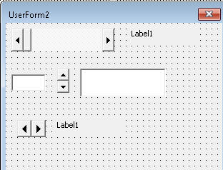
Üstteki scroll ve ortadaki spin için şu kodları
yazabiliriz.
Private Sub ScrollBar1_Change()
lblSıra.Caption = ScrollBar1.Value * 2
End Sub
Private Sub SpinButton1_Change()
txtNo.Value = SpinButton1.Value
End Sub
Ben bunların min/max özelliğini Properties'ten ayarladım. Tabi
istenirse Runtime sırasında da bunlar değiştirilebilir. Mesela bir ComboBox'tan
veya Textbox'tan değişimin kaçar kaçar yapılacağını kullanıcıya da
bırakabiliriz.
Private Sub TextBox1_Change()
If TextBox1.Value > 100 Then
MsgBox "1-100 arası değer girilmelidir"
Exit Sub
End If
SpinButton1.SmallChange = TextBox1.Value
End Sub
Şimdi de en alttaki Spine bakalım. Onun için önce modülün başında bi
global değişken(Dictionary olacak) tanımlayıp, form yüklenir yüklenmez de içine 5 değer atıyorum.
Public dict As Object
Private Sub UserForm_Initialize()
Set dict = CreateObject("Scripting.Dictionary")
dict.Add 1, "Volkan"
dict.Add 2, "Ayşe"
dict.Add 3, "Elif"
dict.Add 4, "Murat"
dict.Add 5, "Hakan"
End Sub
Bu sefer değişimi 1er 1er yaptırıp(smallchange özelliği=1) 1-5 arasındaki kişileri
öğreniyorum.
Private Sub SpinButton2_Change()
Label1.Caption = dict(SpinButton2.Value)
End Sub
TabStrip ve MultiPage
MultiPage
MultiPage'ler, bir veya daha çok Page nesnesini birarada tutan
yapılardır. Framelerin bir üst modeli olarak düşünebilirsiniz. Bir alana
sadece 1 frame koyabilirken aynı alana birkaç Page'i olan bir MultiPage
koyabilirsiniz. Tek farkı yerden tasararuf değil aynı zamanda daha üst
seviyede bir gruplama imkanı da verir. Örneğin oluşturduğunuz form,
departmanınızdaki raporlara ulaşmayı sağlayan bir arayüz ise,
kullandığınız Multipage'in sayfalarından biri Kredi raporlarını diğeri
Mevduat raporlarını v.s gruplamış olabilir. Çeşitli Örnekler bölümünde
bununla ilgili bir çalışmamız olacak.
İlk başta bir Multipage içinde iki sayfa bulunur. Yeni sayfalar
eklemek için en üste sağ tıklayıp "Add Pages" diyin. Her sayfanın
içindeki kontroller, diğer sayfalardan tamamen bağımsızdır.
Sayfalar 0 nolu indexten başlarlar. Bunlara index numarasıyla ulaşabileceğiniz gibi sayfa
ismi veya obje ismiyle de ulaşabilirsiniz.
MultiPage1.Pages(0).Caption 'index
MultiPage1.Pages("Krediler").Caption 'sayfa ismi
MultiPage1.Page4.Caption 'obje ismi
Private Sub MultiPage1_Change()
MsgBox "sayfa indeksi:" & MultiPage1.Value 'seçili sayfanını indexini
MsgBox "SelectedItem.Name yani obje adı:" & MultiPage1.SelectedItem.Name 'seçili sayfanın obje adını
MsgBox "SelectedItem.Caption:" & MultiPage1.SelectedItem.Caption 'seçili sayfanın adını
End Sub
TabStrip
TabStrip kontrolü görünüm olarak MultiPage'e çok benzemekle birlikte,
bunun içine koyduğumuz kontroller tüm sayfalarda aynen görünür, yani
MultiPage'de olduğu gibi farklı sayfalarda farklı kontroller
bulunmayabilir. Ancak burda kritik olan, kontrollerin içeriğinin
farklı olmasını sağlıyor olmamızdır. Bunu da Tab
değiştikçe(bunu bir eventle yönetiriz) içeriğin değişmesini sağlayacak
bir kodla sağlarız. MultiPage'de ise Event olmasına gerek yok, zaten her sayfa
birbirinden bağımsız içeriğe sahiptir.
Tablara erişim şekli MultiPage'de Page'lere erişim ile aynıdır.
Bu sayfada iki kontrol arasındaki farkları daha detaylıca görebilirsiniz.
Şimdi kendi TabStrip örneğimize geçebiliriz.
Bu örnekte Listbox da var, bunun detayını daha aşağıda göreceğiz,
şimdilik ona takılmayın. Sadece
listeyi doldurduğumuzu bilin o kadar.
Private Sub UserForm_Initialize()
'form yüklenir yüklenmez ilk sekme açılır ve 2.sayfadan(0+2) data yüklenir
TabStrip1.Value = 0
Call ListeDoldur(0)
End Sub
Private Sub TabStrip1_Change()
'her sayfa değişiminde ilgili sayfaya ait ürünler doldurulur
Dim ws As Worksheet
Dim alan As Range
Dim i As Integer
i = TabStrip1.Value 'tab'larda index 0'dan başlar
Call ListeDoldur(i)
End Sub
Sub ListeDoldur(k As Integer)
Set ws = ActiveWorkbook.Worksheets(k + 2) 'worksheetlerde index 1den başlar
Label1.Caption = ws.Name
Set alan = ws.Range("A1").CurrentRegion 'ilgili sayfad
ListBox1.Clear 'önce listeyi boşaltalım
For Each urun In alan
ListBox1.AddItem (urun)
Next urun
End Sub
Liste Kontrolleri
Combobox ve Listboxlara
önceden belirlenmiş değerler atanabileceği gibi form üzerindeki düğmeler
aracılığıyla, bunların içeriği zengileştirilebilir veya içlerindeki
elemanlar silinebilir.
Karşılaştırma
-
Comboboxlar kullanıcıya tek değer gösterirken
Listboxlar tüm değerleri tek seferde gösterebilir(hepsi sığmazsa
scrollbar çıkar). Eğer amacınız tüm değerleri tek seferde göstermek
değilse yerden tasarruf amacıyla Combobox tercih edebilirsiniz.
-
Diğer önemli fark ise Comboboxtan sadece 1 eleman
seçebilirken Listboxtan ise çoklu eleman seçimi yapabilirsiniz.
-
Bir diğer fark ise, Comboboxların, listede olmayan bir
değeri girmeye izin vermesidir. Listboxta bu mümkün değildir.
Aşağıdaki görselde, bu iki kontrolü görebilirsiniz. Combobox açılmış
durumdadır.
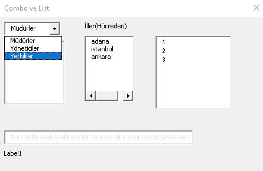
Şimdi de bu kontrollerin çeşitli üyelerine(özellik, metod ve olay) bakalım.
Öncelikle şunu söyleyeyim. Bazı özelliklere hem kod yazarken hem
properties penceresinden, bazısına ise sadece kod yazarken erişilebilir.
"Properteis'ten
erişebiliyorken neden kod ile uğraşayım ki?" diye düşünebilirsiniz.
Bunun bir cevabı "Eğer
form üzerinde birbiriyle aynı türde çok fazla kontrolünüz varsa, mesela
10 tane combobox gibi, herbirine tek tek değer atama yerine, döngüsel
şekilde tek seferde kod ile yapabilrisiniz." olabileceği gibi, diğer bir
cevap ise "runtime sırasında değer atama gerekliliğidir". Mesela bir
butona tıkladığınızda başka bir kontrolün
Enabled özelliğine False değeri atamak gibi.
Listeleri doldurma
Yöntem1
Liste doldurma yöntemlerinden en bilineni ve basit olanı,
Formun Initialize eventi içine dizi olarak eklemektir.
Private Sub UserForm_Initialize()
cbYetkiSeviye.List = Array("Müdürler", "Yöneticiler", "Yetkililer")
Me.cbYetkiSeviye.ListIndex = 0 'ilk eleman seçilir. -1 ile seçili hiç bir eleman olmaz, son eleman için me.cbYetkiSeviye.ListCount - 1
End Sub
Diğer yöntemler arasında Exceldeki bir sayfadan okuma, text
doyasından okuma veya Access gibi bir veritabanından okuma olabilir. Bu
işlemleri yine Initialize içinde yapabileceğiniz gibi bir Button'a
tıklayarak da yapabilirsiniz, tabi pratikte genelde listeler form açıldığında,
yani Initialize sırasında, doldurulur.
Bunların hepsinde de ilgili kontrolün
AddItem metodu kullanılır.
Yöntem2
İkinci yöntem olarak bir text dosyadan okuma yapalım:
dosya = "C:\....\Ornek_dosyalar\Makrolar\userformlist.txt"
Open dosya For Input As 1
Do Until EOF(1)
Line Input #1, Content
Me.ListBox2.AddItem Content
Loop
Close #1
Yöntem3
Excel sayfadan okuma için aklınıza döngüler gelmiş
olabilir, ne var ki buna hiç gerek yok. İlgili alanı Properties'ten RowSource
özelliğine referans verebilirsiniz. Ör. Sheet1!A17:A19(Sayfa adını ve !
işaretini belirterek) veya runtime
sırasında lbŞehirler.RowSource=Range("A17:A19").Address
diyebilirsiniz.
Değerlerin bulunduğu alan sabit değil de değişkense bunun
için aşağıdaki gibi bir kod kullanabilirsiniz.
Private Sub RefEdit1_Change()
Me.ListBox2.RowSource ="Sheet1!A1:A"& Sheet1.Cells(Rows.Count, "A").End(xlUp).Row
End Sub
Bu işlemi bir refEdit elemanına da yaptırabiliriz.
Private Sub RefEdit1_Change()
Me.ListBox2.RowSource = Me.RefEdit1.Value
End Sub
NOT: RefEdit kontrolünü form modal açılmışken
kullanmalısınız, modeless açılmış formlarda sıkıntı yaşanmaktadır.
Yöntem4
Access'ten okuma yapmak için ya DAO ya ADO tekniklerini
biliyor olmak gerekiyor. Bunlar için
bu
sayfaya bakınız.
Bu arada belirtmek isterim ki yeni eleman eklemelerini sona
yapacaksınızdır ama olur da başa veya arada bir yere yapmak isterseniz,
AddItem'ın ikinci parametresini kullanabilirsiniz.
Ve unutmayın ki liste
kontrollerindeki indexler 1'den değil 0'dan başlar.
Me.ListBox2.AddItem Content,0 'ilk sıraya ekledi.
AddItem detaylar
AddItem metodu ekleme işini, çok kolonlu bir listenin ilk kolonuna
yapar. Daha ileri kolonlara ekleme yapmak için List veya Column
propertylerini kullanabilrsiniz. Yine aynı propertiler kullanılarak aynı
anda birden fazla satır da ekleyebilirsiniz. Bu da şu anlama gelir:
Excel sayfasındaki bir grup hücreyi tek seferde ilgili liste kontrolüne
ekleyebilirsiniz.
Bir diziyi olduğu gibi eklemek için List propertysi kulalnılırken,
trasnpose halini eklemek için Column propertysi kullanılır. ,Yani
dizi(i,j)'yi olduğu gibi eklemek için listbox.List(i,j)
kullanılabilir
Aşağıda bununla ilgili bir örnek bulabilirsiniz, ki bu yöntem
elemanların bulunduğu alanı Rowsource olarak belirtmenin bir başka
yoludur. Ancak AddItem ile ilgili önemli bir detay da, liste kontrolümüz
bir datayla ilişkiliyse(Rowsource ile) Additem'ın çalışmayacağıdır. O
yüzden sonrasında dinamik şekilde yeni elemanlar eklemek istiyorsak
Rowsource ile değil aşağıdaki gibi ilerlemeliyz.
Private Sub CommandButton10_Click()
Me.lstÇiftKolon.List = Range("çiftkolon").Value
End Sub
Listeleri boşaltma
Listeleri Clear metodu ile boşaltırız.
Genelde dolu olan bir listeyi tekrardan doldurmadan önce boşaltmak iyi
bir fikirdir. Özellikle formu henüz kapatmamışken, işleri baştan almak
istediğinizde formun doldurma işlemi varsa, bu mükerrer doldurmaya neden
olacağı için kodumuza her zaman (boş bile olsa) önce listeyi boşaltarak
başlamak iyi bir pratiktir. AddItem gibi bu metod da, eğer
ki listemiz bir veri kümesine bağlıysa çalışmaz. Böyle bir durumda
öncelikle RowSource özelliğinin temizlenmesi gerekir.
Sub listeboşalt()
lbŞehirler.Rowsource=""
lbŞehirler.Clear
End Sub
Eğer ki sadece belirli bir elemanı çıkarmak istiyorsak
RemoveItem metodunu kullanırız.
Parametre olarak kaçıncı elemanın çıkartılacağı verilir.(Index'in 0'dan
başladığını unutmayın).
Liste öğelerine erişim
Daha önceki kontrollerde Text ve
Value özelliklerinden
bahsetmiştik. Bunlar diğer kontrollerde neredeyse her zaman eşittirler,
ancak liste kontrollerinde farklı olma durumları oldukça rastlanan
durumlardır.
Liste kontrollerinde Text,
sizin gördüğünüz değeri verirken, Value
altta yatan değeri verir. Örneğin listeyi bir veritabanındaki 2 kolonlu
bir tablodan(veya excelde 2 kolonlu bi alandan) doldurmuşsunuz diyelim.
İlk
kolon şehir ismi ikinci kolon şehir kodudur. ColumnCount
özelliğine 1 derseniz, sadece bir kolon gösterilecektir. İlk kolon
listbox içinde gösterilecektir, ancak listboxtan şehir seçimi yapıldığnda
Value değerine şehir adı değil de kodu atansın istiyorsak
BoundColumn özelliğine 2 atarız. TextColumn
özelliğine ise 1 atarız. Çok kolonlu listelerde TextColumn'un genelde 1
yapıldığı görülür ancak pratikte bunun farklı olduğu durumlar olabilir.
Örneğin aşağıdaki örnekte listeye ülkeler yüklenir, Value olarak id
tutulur, Text olarak da başkentler tutulabilir.
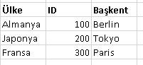
Bunun için yapılması gerekenler:
ColumnCount:1 (Buradaki 1, kaç
kolon gösterilecek anlamımnda)
BoundColumn:2 (Buradaki 2, kaçıncı
kolon Value olacak
TextColumn:3 (kaçıncı
kolon text değerini tutacak, yani gösterilecek)
Liste kontrollerinde eğer büyük veritabanlarıyla çalışıyorsak
peformans açısından Value özelliği ile işlerimizi halletmeliyiz.
NOT: TextColumn'a -1 atandıysa(default budur),
Text özelliği seçilen değerin görünen değerini, 0 verilmişse elemanın indexini, 0'dan büyükler
için kaç verilmişse o kolondaki değeri verir. Yani ilk kolon için
TextValue=1, ikinci kolon için TextValue=2 v.s
Eleman erişimi
Peki hangi elemana erişeceğimzi nasıl belirliyoruz?
List propertysi ve elemanın index
numarası ile.
listbox1.List(0) 'ilk eleman
Normalde List property'si iki eleman alır: satır ve sütun.
İkinci eleman belirtilmezse ilk kolon baz alınır. Yani yukardaki kod ile listbox1.List(0,0)
özdeştir. (Not:List propertysinin parametreleri 0'dan başlar, 1'den
değil)
Peki indexi bilmiyorsak, yani dinamik bir şekilde ele almamız
gerekiyorsa, onun da yolu var. Aşağıdaki örneğe bakalım:
ListIndex ve List
özellikleri: O an seçili elemana erişim için bu iki
özellikle kombine bir şekilde kullanılır. lbYıl.List(lbYıl.ListIndex).
ListIndex bize o an seçili elemanın indexini verirken, bu
indexi List propertry'sine parametre gönderince seçili elemanın
görünen değerini bize verir. ListIndex 0'dan başlar. (Yukarıda
bahsettiğimiz gibi TextColumn özelliğine 0 atayarak da indeksi elde
edebiliyoruz)
Aşağıda 3 ayrı değer
erişim yöntemi bulunuyor. Farkları inceleyerek anlamaya çalışın. Örnek
olarak Japonya seçilyse;
Private Sub CommandButton4_Click()
MsgBox "Value:" & lstBağımlı.Value '200
MsgBox "Text:" & lstBağımlı.Text 'Tokyo
MsgBox "List&listindex:" & lstBağımlı.List(lstBağımlı.ListIndex) 'Japonya
End Sub
Çok kolona erişim
Çok kolona erişmeyi yine List
özelliği ile yapıyoruz. Bu yöntemi sadece erişim için değil, veri ekleme için de
kullanabilirsiniz.
lstSozluk.AddItem "iyi"
lstSozluk.List(0,1)="good" 'ikinci kolona
lstSozluk.List(0,2)="gut" 'üçüncü kolona
Çok kolonlu bir listeye yeni eleman eklemek de şöyle olur
Private Sub CommandButton1_Click()
Me.lst1.AddItem "kötü"
Me.lst1.List(lst1.ListCount - 1, 1) = "bad"
Me.lst1.List(lst1.ListCount - 1, 2) = "schlecht"
End Sub
Listbox'ta çoklu seçim:MultiSelect özelliği
MultiSelect özelliğinin alabileceği 3 değer vardır.
-
fmMultiSelectSingle (numerik değeri 0):Tekli
seçim. Her elemana tıklayışta sadece o seçilir.
-
fmMultiSelectMulti (numerik değeri 1):Her
tıklamada, tıklanan eleman seçili kalır, tekrar aynı elemana
tıklanırsa seçim kalkar.
-
fmMultiSelectExtended (numerik değeri 2):İki
eleman arasındaki tüm elemanları tek seferde seçmek için SHIFT
tuşuna basılır. CTRL tuşu ile ise fmMultiSelectMulti modu taklit
edilebilir.
Çoklu seçimde hangi elemanların seçili olduğunu
Selected özelliği ile test edebiliriz. Parametre olarak elemanın
indexini alır: Listbox1.Selected(n)
Mesela aşağıdaki kod ile sadece seçili elemanları bir Collection'a
atıyoruz.
Private Sub CommandButton5_Click()
Dim coll As New Collection
For i = 0 To ListBox3.ListCount - 1
If ListBox3.Selected(i) Then
coll.Add ListBox3.List(i)
End If
Next i
MsgBox "collectionda " & coll.Count & " adet eleman var"
End Sub
Listedeki elemanları bir collection'a atama
Yukarıdaki işlemi bir de fonksiyon haline getirirsek bundan sonra ne zaman
bir listboxtan seçili elemanları almamız gerekse bu fonksiyonu
kullanabiliriz.
Function ListBoxtakiSeçiliElemanlarıSeç(lst As MSForms.ListBox) As Collection
Dim col As New Collection
If lst.List(lst.ListIndex) = -1 Then GoTo atla
For i = 0 To lst.ListCount - 1
If lst.Selected(i) = True Then col.Add lst.List(i)
Next i
atla:
Set ListBoxtakiSeçiliElemanlarıSeç = col
End Function
'Kullanımı
Sub testListBox()
Dim col As Collection 'new yok, fonksiyonla dolduracağız
Set col = ListBoxtakiSeçiliElemanlarıSeç(UserForm1.LitBox1)
End Sub
Listede belirli bir elemanı seçmek(işaretlemek)
Şimdiye kadar elemana erişim ile hep onun değerini elde etmeyi
kastettik. Ancak bazen ilgili elemanı seçmek de isteyebiliriz. Bu işlem
genelde, listedeki ilk elemanı seçmek için yapılır, ancak tabiki
herhangi bir eleman seçiminde de kullanılabilir.
Bunun için iki yöntem var:
Private Sub CommandButton5_Click()
ListBox3.Selected(0)=True 'Çoklu seçim modunda işe yaramaz
'veya
ListBox3.ListIndex=0
End Sub
Kolon gizleme
3 kolonlu bir veri kümemiz olsun. Diyelim ki üçünü değil de baştaki ile
sondakini almak istiyorsunuz. Böyle bir durumda üçünü de RowSource'a alırız,
ancak ortadakini gizleriz.
Gizlemek için ColumnWidths özelliğine 0 atarız.
Ancak ColumWidths özelliği kullanılırken malesef tek bir kolona değer
ataması yapılamıyor, üç kolon için de değer girmek
lazım.
listbox1.ColumnWidths="50;0;50"
ListBox'ta dinamik filtreleme
Filtreleme amacı gören bir textbox'a yazacağınız metinlerle bir
listbox'taki elemanlarda dinamik filtreleme yapabilirsiniz. Bunun
için yol haritası şöyledir:
- Global bir Collection oluşturun
- Bu collection'ı ve ilgili listbox'ı aynı elemanlarla formun
başlangıcında doldurun
- Textbox'ın Change eventine de ilgili filtreleme kodunu yazın
Kodlar aşağıdaki gibi olabilir:
'Global değişken
Dim ülkelerCol As New Collection
'Form başlangıcı
Private Sub UserForm_Initialize()
For Each ülke In Range("ülkeler")
ülkelerCol.Add ülke.Value
Me.lstDinamik.AddItem ülke.Value
Next ülke
End Sub
'TextBox change eventi
Private Sub txtFiltre_Change()
Dim filtreliÜlkeler As New Collection
Me.lstDinamik.Clear 'önce boşaltıyoruz ki mükerrerlik olmasın
For Each ü In ülkelerCol
If InStr(1, ü, txtFiltre.Text, vbTextCompare) > 0 Then filtreliÜlkeler.Add ü
Next ü
For Each ü In filtreliÜlkeler
Me.lstDinamik.AddItem ü
Next ü
End Sub
Diğer detaylar
Value, Text, Name, Caption
Yukarıda bahsettiğimiz konulara biraz daha detaylı bakalım.
Text: Ekranda gördüğümüz metni verir.
Value: Arkaplanda tutulan değeri
verir.
Bu iki özellik genelde aynı değeri verir. Şu istisnalar hariç:
- Sözkonusu kontrol bir listbox veya combobox ise
- Gösterilen değer bound column'dan farklı ise
Value detaylar
- Multiselect moddaki listboxta Value kullanılamaz
- Multicolumn listboxta BoundColumn varsa value değeri seçili
satırdaki bu kolondaki değeri verir
- Multipage'de sayfa indexini verir
- Checkbox OptionButton ve ToggleButtonda ilgili kontrolün seçili
olup olmadığını verir. Seçiliyse True, aksi halde False
- Spin ve ScrolBarda o anki değeri verir
- TextBox'ta Text ile aynı değeri verir.
Caption: Label'da yazan metni,
Form'da ise form başlığını verir. Gariptir ki, Label'da Text veya Value
özelliği yerine Caption konmuş.
Name: Nesnenin adını verir. Kod sırasında
bu nesneye bu isimle
başvuru yapılabilir. Ör: Yılları gösteren comboboxa "cbYıllar" diye
çağırdığımız gibi. Bu özelliği If control.Name="cbYıllar"
şeklinde döngüsel bir kod içinde ilgili nesnenin belirli bir nesne olup
olmadığını kontrol etmek için de kullanabiliriz.
List özellikleri
ListCount
Readonly olan bu özellik, ilgili liste kontrolündeki satır sayısını
verir. ListRows'daki Rows ifadesi biraz kafa karışıklığı yaratabilir ama
satır sayısını ListRows değil ListCount vermektedir. Bu özelliğe sadece
kod ortamında ulaşılabilir.
ListRows
Sadece comboboxlarda bulunan bu özellik, comboboxta gösterilecek eleman
sayısını verir. Default değeri 8'dir. Belirtilen değerden daha fazla
satır varsa kenarda scrollbar çıkar. Aşağıdaki kod ile dinamik bir
şekilde gösterilecek eleman sayısını kontrol edebilrsiniz. Eğer
comboboxtaki eleman sayısı 5ten büyükse 5le sınırlayalım, 5ten küçükse
kaç satırsa o kadar görünsün.
Private Sub UserForm_Initialize()
With ComboBox1
If .ListCount > 5 Then
.ListRows = 5
Else
.ListRows = .ListCount
End If
End With
End Sub
Me
Üzerinde çalıştığınız formun kendisine Me ifadesi ile
başvurabilirsiniz. Bu ifade, sadece forma başvuru için faydalı değil aynı zamanda
form üzerindeki kontrollere intellisense yardımıyla hızlıca ulaşma
imkanı verdiği için de faydalıdır.
Kontrolleri tek tek dolaşma
Bazı durumlarda formdaki tüm kontrollerde dolaşıp, onların
tipine(TypeNeme), adına(Name) veya başka bir özelliğine bakarak işlem
yapmak isteriz. Bunu Controls collection'ına For Each uygulayarak
yaparız.
Aşağıdaki örnekte Label olan tüm kontrollerin adını yazdırıyoruz.
For Each ctrl In Me.Controls
If TypeName(ctrl) = "Label" Then
Debug.Print ctrl.Name
End If
Next ctrl
Dolaşmak istediğimiz kontroller belli bir çerçeve(Frame) içindeyse;
For Each ctrl In Me.Frame1.Controls
If TypeName(ctrl) = "Label" Then
Debug.Print ctrl.Name
End If
Next ctrl
Tüm framelerde dolaşmak için
For Each cf In Me.Controls
If TypeName(cf) = "Frame" Then
For Each ctrl In cf.Controls
If TypeName(ctrl) = "Label" Then
Debug.Print ctrl.Name
End If
Next ctrl
End If
Next cf
Event detayları
Mouse eventleri
MouseDown: Mouse tuşu basıldığında meydana gelir
MouseUp: Mouse tuşu bıraklıdığında meydana gelir
Click: Mouse ile tıklanabilir bir kontrole
tıklandığında meydana gelir
Önce MouseDown olur, sonra MouseUp, en sonra Click. İlk ikisi hem
sol hem sağ tuş ile tetiklenebilirken Click sadece sol tuş ile
tetiklenir. Mesela bir kontrolün ucuna tıklayıp yeniden
boyutlandıracaksanız, tıkladığınız anda MouseDown gerçekleşir, yeniden
boyutlandırma bittiğinde ve mousetan elinizi çektiğinizde Up
gerçekleşir.
MouseMove:Üzerinden geçerken gerçekleşir. Bunu çok kullanma durumum olmadı
açıkçası. İlgili
kontrolün üzerine gelindiğinde bir mesaj vermek istiyorsanız bunu
ControlTip özelliği ile de verebilrisiniz.
Buton parametresiyle sol/sağ hangisine basıldığı tespit edilebilir.
Mouse tuşlarının nasıl öğrenileceğini aşağıda klavye tuşlarının olduğu
bölümde görebilirsiniz.
X ve Y parametreliryle hangi noktalara basıldığı
tespit edilebilir, yine bunlar da çok kullandığım özellikler değiller.
Shift parametresiyle Shift, Ctrl, Alt tuşlarıdan birine basılıp
basılmadığı kontrol edilebilir.
- 1:SHIFT
- 2:CTRL
- 3:SHIFT+CTRL
- 4:ALT
- 5:ALT+SHIFT
- 6:ALT+CTRL
- 7:üçüne birden
Aşağıda çeşitli örnekler bulunmakta.
Private Sub CommandButton9_MouseDown(ByVal Button As Integer, ByVal Shift As Integer, ByVal X As Single, ByVal Y As Single)
MsgBox "mousedown-" & Button & "-" & Shift & "-" & X
End Sub
--------------------------
Private Sub CommandButton9_MouseUp(ByVal Button As Integer, ByVal Shift As Integer, ByVal X As Single, ByVal Y As Single)
MsgBox "mouseup-" & Button & "-" & Shift & "-" & X
End Sub
-------------------------
Private Sub ListBox1_MouseDown(ByVal Button As Integer, ByVal Shift As Integer, ByVal X As Single, ByVal Y As Single)
If Button = KeyCodeConstants.vbKeyRButton Then
ListBox2.AddItem ListBox1.List(ListBox1.ListIndex)
End If
End Sub
--------------------------
Private Sub cbYıllar_MouseDown(ByVal Button As Integer, ByVal Shift As Integer, ByVal X As Single, ByVal Y As Single)
cbYıllar.DropDown
End Sub
Klavye eventleri
3 adet klavye eventi vardır. Bunlar KeyDown,
KeyPress ve KeyUp olup
bu sırayla meydana gelirler. KeyDown ve Keyup parametre olarak Keycode
alırken, KeyPress KeyAscii alır.
Hangi tuş veya tuş kombinasyonlarına(Ctrl+Enter gibi) basıldığını
öğrenmek için kullanılırıllar.
Mesela bazen yer tasarrufu yapmak amacıyla Textboxa yazılan metinle
ilgili bir iş yapmak için form üzerine button koymak yerine yazmayı
bitirdikten sonra Enter'a(veya Ctrl+Enter) basılması durumunda ilgili işlemin yapılmasını
sağlayabilirsiniz.
Private Sub TextBox1_KeyDown(ByVal KeyCode As MSForms.ReturnInteger, ByVal Shift As Integer)
If KeyCode = 13 Then
Me.cbYetkiSeviye.AddItem Me.TextBox1.Text
Me.Label1.Caption = "Yetki seviyelerine " & Me.TextBox1.Text & " eklendi"
End If
End Sub
KeyCodelari aşağıdaki linklerden bulabileceğiniz gibi, VBA'de
KeyCodeConstants yazıp "."'ya basınca intellisense aracılığı ile
constant değerlerini de yazabilrsiniz.
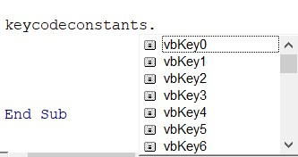
Not:Enter için vbKeyReturn diye bakmak lazım,
vbKeyEnter diye bişey bulunmuyor.
http://www.asciitable.com/
https://msdn.microsoft.com/en-us/vba/language-reference-vba/articles/keydown-keyup-events
Bu linkte ise .Net dilindeki farklar detaylıca anlatılıyor ama
bu açıklamaların prensipte VBA için de geçerli olduğunu söyleyebilirim.
Birçok kontrol için tek event tanımlama
Formumuzda diyelim ki 10 adet textbox var, ve hepsi için de ortak
bir Event tanımlamak istiyorum. Mesela içine girince içindeki yazı
silinsin istiyorum. Bunun için tek tek herbirine event tanımlamak
zahmetli olacaktır. İşte böyle durumlar için custom eventlerden
yararlanıyoruz. Örnek dosyayı şuradan
indirebilirsiniz.
Adımlarımız şöyle:
Öncelikle bir Class Modül yaratırız. Tepesine aşağıdaki kodu
yazarız. Biz burada TextBox için yazıyoruz ama farklı kontroller
için de aynısı uygulanabilir.
Public WithEvents txtGroup As MSForms.TextBox
Sonra tepeden nesne kutusunda txtGroup seçilir, yandan da
mousedown eventi seçilir(Custom TextBoxlarda Enter eventi
bulunmuyor, ama mousedown da aynı görevi görecektir. Tabi ilgili
kutulara mouse ile tıklanamsı kaydıyla, tab tuşuyla ilerlenerek
gelinirse tetiklenmez). İçine de aşağıdaki kod yazılır.
Private Sub txtGroup_MouseDown(ByVal Button As Integer, ByVal Shift As Integer, ByVal X As Single, ByVal Y As Single)
With txtGroup
.Text = ""
.ForeColor = vbBlack 'Form açıldığında gri renkli bişeyler yazıyor olsun
End With
End Sub
Son olarak Form modülüne gelip tepeye Class1 tipli bir dizi
tanımlıyoruz, eleman sayısnı bilmediğimiz için boyutsuz
tanımlıyoruz. Initialize eventi içinde TextBoxlarda dolaşarak
boyutumuzu sürekli artırıyoruz.
'Global değişken bölgesine
Dim controller() As New Class1
Private Sub UserForm_Initialize()
Dim adet As Integer
Dim ctrl As Control
For Each ctrl In UserForm1.Controls
If TypeName(ctrl) = "TextBox" Then
adet = adet + 1
ReDim Preserve controller(1 To adet)
Set controller(adet).txtGroup = ctrl
End If
Next ctrl
End Sub
Kontrol sayısı çok ise boyutsuz dizi tanımlamak yerine Collection
tanımlamak daha doğru bir çözüm olacaktır. Bununla ilgili bir örnek
şu
linkte bulunmaktadır.
Diğer Eventler
ListBox'ın Change eventi, Formun Initialize ve Terminate eventleri
adları üzerinde olan eventler, bunları kurcalayarak kendinizin
görmesinde fayda var. Mesela ListBox'ta bir ana ürün seçildiğinde onun
yanındaki listboxa alt ürünlerin gelmesini ilk listbox'ın change
eventiyle yaptırabilirsiniz. Form'un Terminate eventi ise Workbookların
Close eventine benzer, form kapanırken devreye girerler ve kapanış
işlemlerinizi yapmanzı sağlar.
Diğer birçok eventi şimdiye kadar hiç kullanmadım.
NOT:Listbox'ta seçilen bir eleman Excel
sayfasındaki bir hücreyi değiştiriyorsa bu değişklik Worksheet'in Change
eventini tetiklemez.
Hizalama ve Ölçü işlemleri
Userformlarda
VBA editöründeyken araç çubuğuna sağ tıklayın ve UserForm çubuğunu
aktive edin.
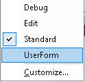
Bizim
ilgileneceğimiz, kırmızı halka içindekilerdir.
Onların da içerikleri aşağdaki gibidir. Soldakiyle çeşitli yönlerde
hizalama yaparız. Ortadakiyle kontrollerin arasındaki uzaklığı eşit hale
getiririz. En sağdakiyle ise kontrollerin ölçülerini eşit hale getiririz.
Bunlarla oynayarak ne işe yaradıklarını daha kolay görebilirsiniz.
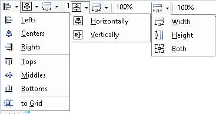
Worksheet'te
İlgili kontrolün konumu hücreler üzerinde rasgele durmasın da, uçları
hücrelerin köşelerine gelsin istiyorsanız, ilgili kontrol
seçiliyken Format menüsünden Arrange Grubundaki Align butonuna tıklayın
ve açılır kutudan Snap to Grid(kılavuzlara dayandır) diyin, arkasından
ilgili kontrolün uçlarını köşelere doğru çekin, otomatikman yerleşir
(Siz bu son adımı da yapmadan köşelere otomatikman yerleşmez)
WorkSheet'te ActiveX listbox'a hücre bağlama
Önce developer menüsünden desgin moda geçilir. Sonra
ListFillRange özelliğine istenen hücre grubu seçilerek
aktarılır. Aşağıdaki örnekteki gibi.
Diğer özellikler
- WordWrap: Text veya
Caption özelliğine birden fazla satırda yazma özelliği verir.
- ControlTipText: ilgili kontrolün
üzerine gelince onun hakkında kısa bilgi veren, veya birtakım
talimatlar içeren bir balon çıkar.
- Enabled: İlgili elemanla etkileşime
geçilip geçilemeyeceğini belirtir. Genelde bir başka kontrolle diğer
kontrollerin enabled özelliği kontrol edilir.
- Visible:Enabled'ın kullanım
mantığına benzer. Bu, etkileşimden ziyade ilgili kontrolü gösterir
veya gizler.
-
TabIndex: Kontroller arasında Tab
tuşu ile gezinebilirsiniz. Hangi sırada gezineceğinizi bu özelliğe
atayacağınız değerle yönetirsiniz.
-
ControlSource: Bir kontrolde
seçtiğiniz/girdiğiniz değerin Excelde bir hücreye de yansımasını
istiyorsanız bu özelliğe o hücreyi atarsınız. Ör:Listboxtan
seçtiğiniz bir şube adı A1 hücresinde de çıksın isterseniz
ControlSource özelliğine A1 atayın. Genelde properties'ten
designtime sırasında kullanılır.
Aşağıda http://www.globaliconnect.com
sitesinden aldığım bir kontrol-özellik matirisi var. Bu matristen, hangi
kontrolün hangi özellikleri mevcut, onları tek bakışta görebilirsiniz.
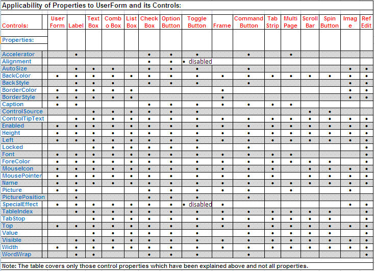
Çeşitli püf noktaları
UserForm kontrollerini kullanırken bazı püf noktalarını bilmek
oldukça faydalı olabilemktedir. Bunlardan birkaçını aşağıda vermeye
çalıştım.
- Toggle işlemi: Bir kontrole tıklandığında
onunla ilgili bir boolean işlem yapılacaksa( başka bir kontrolün
enabled değerini, kendisinin durumuna veya zıttına ayarlamak gibi)
bunu If bloğu içinde yapmak yerine ters/aynı boolena değer atanarak
tek satırda yapabilirsiniz.
If Checkbox1.Value= True Then
Frame1.Enabled=True
Else
Frame1.Enabled=False
End If
'yerine
Frame1.Enabled=Checkbox1.Value
'ters işlem yapılacaksa başına Not ifadesi konur
Frame1.Enabled= Not Checkbox1.Value
- Değer girilmesi gereken yerler için kontrolünüz olsun. Ör:
Mail gönderim işlemi yapan bir Formunuz varsa, Subject(Konu) alanı
mutlaka dolu olmalı.
If konu.Text ="" Then
MsgBox "Lütfen konu alanını boş bırakmayın"
Exit Sub
End If
- Aşağıdaki linklerde hem genel olarak önemli noktalara temas var
hem de çeşitli püf noktaları da bulunuyor. Bunları da ayrıca
incelemenizi tavsiye ederim.
Microsoft userform dökümantasyonu
http://what-when-how.com/excel-vba/userform-techniques-and-tricks-in-excel-vba/
https://gregmaxey.com/word_tip_pages/userforms_advanced_tips.html
- Cheklist: Formunuz bittikten sonra genel bir
kontrol listesine göre eksikleri kontrol etmek güzel bir
alışkanlıktır.
- Hizalamalar tamam mı?
- Aynı kümedeki benzer özellikli kontrollerin ölçüleri eşit
mi?
- Tab indexler doğru sırada mı?
- Esc tuşuna basılarak formdan çıkılabiliyor mu?
- Form başlığı belirlendi mi?
- Formunuz bir add-in'de kullanılacaksa Add-in'den açılışı
test ettiniz mi?
Çeşitli Örnekler
Data Formları
Bu başlık altında bir örnek olmayacak. Birçok yerde bu konu
anlatılırken, verilen örneklerde Data Formlarını çok gördüğüm için ben
de başlık olarak koydum ama konuyu bir örnekle anlatmak için değil, size bunun için
başka bir alternatif önermek için.
Ben bu iş için Access kullanmanızı öneriyorum. Access'in
güzelliği sözkonusu datayı gerçek bir veritabanı uygulamasında saklıyor
olmasıdır. Bu anlamda Excel'i çok da veritabanı uygulaması gibi
kullanmanızı önermiyorum. Bunun için belki bir süre sonra bu siteye
temel düzeyde Access anlatan sayfalar da koyabilirim.
Kokpit uygulaması
Bu uygulamayı aynen burdaki gibi çalıştırabilmeniz için
bu eki
indirmenizi tavisye ederim. Ek indikten son içindekileri C:\ sürücüsü
altında "raporlar" diye bir klasör oluşturup buraya kopyalayın. Bu ek ile uğraşmak yerine kodlarda gerekli
değişiklikleri yaparak da kendi istediğiniz adreslerdeki dosyaların
açılmasını sağlayabilirsiniz.
Kokpit dosyasının kendisine ise
bu ekten
ulaşabilirsiniz.
Bu örnek ile departmanınızda/bölümünüzde sık kullanılan dosyalara
belli kategoriler aracılığıyla ulaşılmasını sağlayabilecek, kimin ne
zaman hangi dosyaya ulaştığının da log kaydını tutmuş olabileceksiniz.
Logger
örneğini inceleyerek bu log kaydının nasıl tutulduğunu detaylıca
öğrenebilirsiniz.
Ana ekran görüntüsü aşağıdaki gibi olan formumuzda 4 ana sekme
bulunuyor. sekmelerden bazılarında istenilen döneme ait raporun
açılmasını sağlayana combobxlar bulunuyor. Ayrıca tüm geçmiş raporların
da görüntülenmesini sağlamak için her sekmenin sağında mavi yazılarla
yazılmış, üzerine gelindiğinde büyük + işaretine dönen linkle
bulunmakta. Örnek olduğu için tüm düğmeler çalışmamaktadır, sadece belli
butonlara kod ataması yapılmıştır.
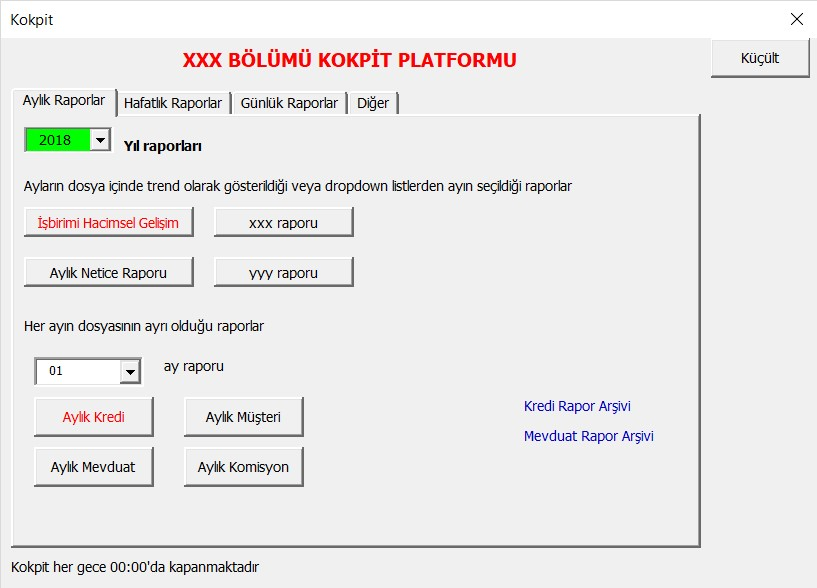
Şimdi kodların üzerinden geçelim:
Öncelikle, dosya açılır açılmaz çalışacak koda bakalım. Dosya
açıldığında, başkalarında açık kalması bazen probleme neden olabildiği
için, ilgili kişinin pc'sinde dosyanın gece 00:00da kapanmasını
sağlıyoruz. Sonra Kokpiti kimin ne zaman açtığını kaydedecek log
prosedürünü çağırıyoruz. son olarak da anaformumuzu gösteriyoruz.
Private Sub Workbook_Open()
Application.OnTime TimeValue("23:59:59"), procedure:="kapat", schedule:=True
Call logkaydı
Anaform.Show vbModeless
End Sub
ana form açılır açılmaz çalışacak kodu ise Initialize eventi içne
yazıyoruz.
- küçültme büyütme işlemlerinde kullanmak üzere boy ve üst nokta
ölçülerini alıyoruz. Tabi bunlar en tepede global olarak tanımlanan
değişkenler olmalı.
- Excel dosyanın kendisi gizli değilse gizliyoruz, ikinci kez açma
kapama durumlarında hata almamk için önce gizli olup olmadığını
kontrol eidyoruz.
- 2 tane log butonununu sadece sizde(bu örnekte benim pc adım
yazılı, siz kendi pc adınızı yazarsınız) açılmasını sağlıyorsunuz.
Bu log butonlarında log dosyalarının(txt formatlıdır) içeriğinin
aktarıldığı Excel dosyalar açılmaktadır. (Bu örnekte txtden excele
alma detayı anlatılmamıştır)
- sonra da comboboxların ilk değer atamalarını, çeşşitli
yöntemlerle, yapıyoruz.
Private Sub UserForm_Initialize()
dHeight = Me.Height
dTop = Me.Top
If Windows("Kokpit.xlsm").Visible Then
Windows("Kokpit.xlsm").Visible = False
End If
'log butonnları benden başkasına görünmesin
If Environ("username") <> "Volki" Then
Me.cmdDetayLog.Visible = False
Me.cmdLogAna.Visible = False
End If
'AddItem ile eleman ekleme
Me.cbYıl.AddItem (Yıl)
Me.cbYıl.AddItem (Yıl - 1)
Me.cbYıl.Text = Yıl 'veya Value
'List ve Array ile eleman ekleme
Me.cbGün.List = Array(1, 2, 3)
Me.cbGün.Value = 1 'veya Text
'düngüsel olarak 12 ayı doldurma
For i = 1 To 12
'Me.cbAy.AddItem i 'bölgesel ayarlarda tarih formatının durumuna göre burası veya aşağısı
Me.cbAy.AddItem IIf(i < 10, "0" & i, i)
Next i
Me.cbAy.Value = "01"
End Sub
Rapor açan düğmelerdeki kodlardan birine örnek aşağıdaki gibidir. Burada
önce detay rapor loguna baz teşkil edecek işlemler yapılıyor, sonra,
açılacak dosyanın oluşuş oluşmadığı kontrol edildikten sonra rapor
açılmaya çalışılıyor. dosya henüz oluşmadıysa bir uyarı veirliyor. Dosya
oluşmasnı kontrol eden örneğin detayını buradan incelyebnilirsiniz.
(NOT: Benim, kurumumda yaptığım gibi tam otomatik işleyen bir sistemde,
ilgili raporlar uygun zamanı bekleyip kendileri çalışır, kendileri uygun
yere kaydolur ve ilgili kullanıcılara maille 'raporçıktı'
bilgilendirmesi yapılır. O yüzden bu tür bir okntrolün ypaılması
anlamsız olabilir, ama fazla kontrol göz çıkarmaz desturuyla hareket
edelim ve kontrolümüz yapalım)
Private Sub CommandButton25_Click()
On Error GoTo hata
rapor = "İşbirimi_Hacimsel_Gelişim"
frekans = "Aylık"
Call detayraporlogu(rapor, frekans)
dosya = aylıkyol & Me.cbYıl.Value & "\İşbirimi Hacimsel Gelişim Raporu.xlsx"
If dosyavarmı(dosya) Then
Workbooks.Open Filename:=dosya, ReadOnly:=True
Else
MsgBox "Dosya henüz oluşmamış, Volkanla görüşün"
End If
Exit Sub
hata:
MsgBox "Bi sorun oluştu, Volkanla görüşün"
End Sub
Tüm rapor arşivini gösteren kodumuz aşağıdaki gibidir
Private Sub Label10_Click()
On Error GoTo hata
Shell "explorer.exe" & " " & günlükyol & "Günsonu Bakiyeler", vbMaximizedFocus
Exit Sub
hata:
MsgBox "Bi sorun oluştu, Volkanla görüşün"
End Sub
Aşağıdaki kodlar ise sırayla, bir access dosyası, bir internet linki ve
bir word dosyasını açan düğmelerin kodları bulunmakta
Private Sub CommandButton29_Click()
On Error GoTo hata
On Error Resume Next
Set ac = GetObject(, "Access.Application")
If ac Is Nothing Then
Set ac = GetObject(, "Access.Application")
ac.opencurrentdatabase "C:\raporlar\hedefler.accdb"
ac.UserControl = True
Set ac = Nothing
End If
Exit Sub
hata:
MsgBox "Bi sorun oluştu, Volkanla görüşün"
End Sub
--------------------------------------------------
Private Sub CommandButton30_Click()
Shell ("Explorer http://www.excelinefendisi.com/Excelent/KullanimKilavuzu.pdf")
End Sub
--------------------------------------------------
Private Sub CommandButton31_Click()
On Error GoTo hata
Set wordapp = CreateObject("Word.Application")
Set wordDoc = wordapp.documents.Open("C:\raporlar\satış tanımları.docx")
wordapp.Visible = True
Exit Sub
hata:
MsgBox "Bi sorun oluştu, Volkanla görüşün"
End Sub
Formu büyütüp/küçültme işlemi aşağıdaki kodla yapılır.
Private Sub ToggleButton1_Click()
If Me.ToggleButton1.Value = True Then
Me.Height = dHeight * 0.1
Me.Top = 0
Me.ToggleButton1.Caption = "Büyüt"
Else
Me.Height = dHeight
Me.Top = 150
Me.ToggleButton1.Caption = "Küçült"
End If
End Sub
Son olarak
form kapanırken, dosyayı da kapatıyoruz, kapanırken kaydolmasın
istiyoruz ve dosya açılırken schedule ettiğimiz kapat makrosunu devreden
çıakrıyoruz.
Private Sub UserForm_Terminate()
Application.OnTime TimeValue("23:59:59"), procedure:="kapat", schedule:=False
Windows("Kokpit.xlsm").Close savechanges:=False
End Sub
Spin buttonlu filtre değiştirme formu
Otomatik mail gönderme
Otomatik mail gönderme işlemi Outlook nesne modelini bilmeyi
gerektirdiği için onunla ilgili örneği
buraya
koydum.
SQL Çalıştırma formu
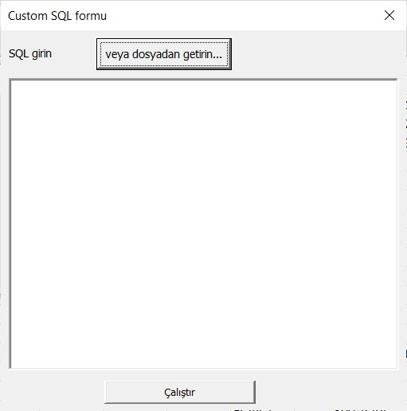
Bu form ile Toad, AQT, SQL Developer gibi araçlardan çektiğiniz büyük
dataları Excel'e yapıştırma zahmetinden kurtulmuş olursunuz, zira
bununla, istediğiniz sonuç doğrudan Excelin içine yerleşir.
Bunun için
Veritabanlarıyla ilgili
bölümde anlatılan konuları bilmeniz gerekiyor.
Bu örneği normalde oraya koymam gerekirdi, ancak userformlarla neler
yapılabileceğine ait güzel bir örnek olduğu için buraya koydum.
İlk yapmamız gereken, formu açan bir kod yazmaktır. Aşağıdaki bu mini
kodu ya bir add-indeki düğmeye ya da QAT üzerine yerleştireceğimiz bir
düğmeye atarız. Siz şimdilik personal.xlsb dosyasında bir modüle koyarak
da ilerleyebilirsiniz.
Sub adosql()
frmSQL.Show
End Sub
Sonrasında ise formumuz açılır ve Çalıştır butonundaki kodumuz
aşağıdaki gibidir. Aşağıda commentlerde belirtildiği gibi, eğer
bağlandığımız veritabanı Oracle veya DB2 gibi şifre kullanımı zorunlu
olan bir database ise şifre değişkenini kullanmanız gerekir, ve
connection stringinizi de buna göre ayarlamanız gerekir, bunlara ait
bilgiler
Veritabanı programlama sayfasında bulunuyor. Ancak biz şuan Access
gibi şifre zorunluluğu olmayan bir veritabanına bağlandığımız için
şimdilik bu değişkeni commentle pasif hale getirdik.
Private Sub CommandButton2_Click()
'önce tools>references'tan microsoft ado 6.1 seçilmeli
Dim con As New ADODB.Connection
Dim rs As New ADODB.Recordset
Dim strDB As Stream
Dim strSQL As String
Dim constr As String
'Static şifre As String 'her çalıştırma sırasında sormasın diye, eğer şifreniz yoksa uncommentli kalsın, şifreyle ulaştığınız bir database sözkonusuysa comment işaretini kaldırın
On Error GoTo hata
Me.Hide 'formu gizliyoruz
strSQL = frmSQL.TextBox1.Text
If strSQL = "" Then Exit Sub
'şifreli bir veritabanı sözkonusuya aşağıdaki commentleri kaldırın
'If şifre = "" Then
' şifre = InputBox("Şifrenizi giriniz")
'End If
cevap = MsgBox("yeni dosya mı olacak", vbYesNoCancel)
constr = "Provider = Microsoft.ACE.OLEDB.12.0; data source=C:\Users\Volki\Documents\My Web Sites\mysite\Ornek_dosyalar\Makrolar\vbausrformsql.accdb"
con.Open ConnectionString:=constr
Application.ScreenUpdating = False
rs.Open Source:=strSQL, ActiveConnection:=con, CursorType:=adOpenKeyset, LockType:=adLockOptimistic
rs.MoveFirst
If cevap = vbYes Then
Workbooks.Add
End If
'önce başlıklar
For i = 0 To rs.Fields.Count - 1
ActiveCell.Offset(0, i).Value = rs.Fields(i).Name
Next i
'şimdi datayı yapıştıralım
ActiveCell.Offset(1, 0).Select
ActiveCell.CopyFromRecordset rs
'burdan sonrasında isterseniz özel tablo formatları da uygulayabilirsiniz
rs.Close
con.Close
Set rs = Nothing
Set con = Nothing
Unload frmSQL 'formu bellekten siliyoruz
Application.ScreenUpdating = True
Exit Sub
hata:
MsgBox Err.Description
Application.ScreenUpdating = True
End Sub
Bu arada kodu elle yazmak yerine hazır kaydedilmiş bir sql
dosyasından da getirebilirsiniz, bunun için formdaki ilgili düğmedeki
koda atanan kod ise aşağıdaki gibidir.
Private Sub CommandButton1_Click()
Dim fd As FileDialog
Dim fso As New FileSystemObject
Dim ts As TextStream
Set fd = Application.FileDialog(msoFileDialogFilePicker)
If fd.Show = 0 Then
Exit Sub
End If
Set ts = fso.OpenTextFile(fd.SelectedItems(1))
içerik = ts.ReadAll
ts.Close
Set ts = Nothing
Set fso = Nothing
Me.TextBox1.Text = içerik
End Sub
Dosya Bölme formu
Bu form, çalıştığım kurumda şuana kadar en çok rağbet gören
Dosya Bölme makromu
içeren formdur. Aslında favori olma konusunda buna eşlik eden bir de
otomatik mail gönderme formu var, ki buna da yukarıda yer verdim. İşte
bu meşhur toplu mail gönderme işleminde parametrik ek
kullanımı da olacaksa bu makro ile bu ekleri parçalama işlemi yapılmaktadır. Mail gönderme formuna
ise
buradan ulaşabilirsiniz.
Bölme işleminde temel olarak
Dictionary
kullanma yoluna gittim. Bunun ilk halinde dictionary kullanmıyordum ve
büyük dosyaları bölme işlemi uzun sürüyordu. Sonradan kodu elden geçirip
bu hale getirdim. (Excelent menüsünden indirebileceğiniz VSTO
add-in'imde ise ilk yöntemde kullandığım metodolojiyi benimsemiştim.
Ancak burdaki kodlar doğrudan VBA değil, VB.Net kodları olduğu ve kod
dönüştürme işlemi de zahmetli olduğu için buna henüz vakit ayıramadım.
İlk fırsatta bu dönüştürme işlemini de yapacağım.)
Evet, şimdi kodları incelemeye başlayabiliriz.(Formun ve kodların olduğu
dosya sayfanın başındaki user_formlardır).
Diyelim ki, elimizde şağıdaki gibi bir liste var. Her bir bölge
için ayrı dosya oluşturmak istiyoruz.
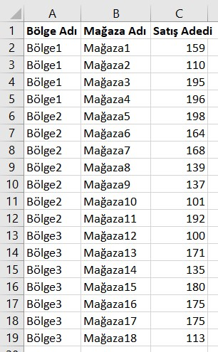
Hedef olarak görmek istediğimiz şey şöyle:
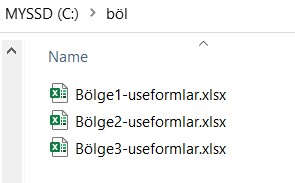
Bölme formumuzu açmak için, ya bir Add-in'deki düğmey ya da QAT
üzerindeki bir düğmeye aşağıdaki kodu atarız. Siz şimdilik personal.xlsb
üzerinden veya örnek dosya üzeriine gelip, doğrudan forma gelip F5
tuşuna basarak da formu aktive edebilirsiniz.
Sub BölmeAç()
frmBöl.Show
End Sub
Aşağıdaki gibi formumuz açılır.
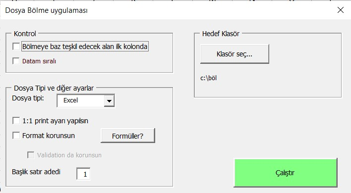
Bu kontrollere verdiğim isimleri tek tek burda yazmama gerek yok, kod
içindenkendiniz de bakabilrisinirsiniz.
Öncelikle form içindeki kodlara bakalım, sonrasında ana kodun bulunduğu
modül koduna bakacağız.
ilk olarak Initialize event koduna bakıyoruz. Burada comboların içeriği
dolduruluyor ve bir tanesi gizleniyor.
Private Sub UserForm_Initialize()
Me.cbDosyatip.List = Array("Excel", "PDF")
Me.cbDosyatip.Value = "Excel"
Me.cbPrint.List = Array("Landscape", "Portrait")
Me.cbPrint.Value = "Landscape"
Me.cbPrint.Visible = False
End Sub
Format korunsun checkbox'ına tıklandığında, tick konmuşsa Dosyatip
comboboxında seçilen değere göre bir mesaj çıkmakta, bu mesaj her
checkbox tıklanışında çıkmasın diye
static
değişkenle kontrol edilmektedir, ayrıca yine tick konması durumunda
Validation checkbox'ı da aktif hale getirilmekte, tick kaldırılınca
tekrar pasif olmaktadır.
Private Sub chkFormat_AfterUpdate()
Static i As Integer 'bu chechkbox her değiştiğinde sürekli bu msgbox çıkmasın diye, bi kere uyarması yeterli
If Me.chkFormat.Value = True Then
If i = 0 Then
If Me.cbDosyatip.Value = "Excel" Then 'formatlı olsa bile pdf hızlı çalışır
MsgBox "Dosya tipi Excel seçildiğinde, format korunursa işlem daha uzun sürecektir." & vbCrLf & _
"Süre önemliise ya dosya tipini PDF seçin ya da işlemi formatsız yapın"
End If
i = i + 1
End If
Me.chkValidation.Enabled = True
Else
Me.chkValidation.Enabled = False
End If
End Sub
Print checkbox'ı seçildiğinde ise print layoutunun gösterildiği combobox
gösterilmekte, seçim kaldırıldığında tekrar gizlenmektedir.
Private Sub chkPrint_AfterUpdate()
Me.cbPrint.Visible = Me.chkPrint.Value
End Sub
Aşağıdaki kod ise Çalıştır düğmesindeki kod olup, ana kod için ön
hazırlık yapmakta ve en son çeşitli parametrelerle ana kodu çağırmakta.
Burda iki kontrol bulunuyor. Formun sol üst köşesindeki iki işlemin
yapılmış ve bu chekboxların da işaretlenmiş olması lazım, aksi halde bir
mesaj gösterilmekte ve kodun çalışması durmaktadır.
Private Sub CommandButton1_Click()
On Error GoTo hata
Dim printayar As String
'kontroller
If Me.chkKontrolilkkolon.Value = False Then
MsgBox "bölmeye baz teşkil edecek kolon ilk kolonda olmalı." & vbCrLf & _
"Eğer durum gerçekten böyleyse 'Kontrol' çerçevesi içindeki ilgili checkboxı işaretleyin"
Exit Sub
End If
If Me.chkKontrolSıralı.Value = False Then
MsgBox "Datanız sıralı olmalı. Eğer durum gerçekten böyleyse 'Kontrol' çerçevesi içindeki ilgili checkboxı işaretleyin"
Exit Sub
End If
'böl klasörü yoksa yaratalım
If filefolderexists("C:\böl") = False Then MkDir ("c:\böl")
'A kolonunda / işaretei kontrolü. Zira dosya isimlerinde / işareti olamaz.
On Error Resume Next 'bulamazsa devam etsin diye
Columns("A:A").Select
Selection.Replace what:="/", replacement:="-", lookat:=xlPart, _
searchorder:=xlByRows, MatchCase:=False, searchformat:=False, ReplaceFormat:=False
'başlık satırından sonraki satırda hiç boş hücre olmamalı, space yapalım
Rows(Me.txtBaşlık.Value + 1).Replace what:="", replacement:=" ", lookat:=xlWhole, _
searchorder:=xlByRows, MatchCase:=False, searchformat:=False, ReplaceFormat:=False
'hata kontrolünü tekrar getirelim
On Error GoTo hata
If Me.chkPrint.Value = True Then
printayar = Me.cbPrint.Value
End If
Cells(CInt(Me.txtBaşlık.Text), 1).Select
Call filtrekontrol
Application.Wait (Now + TimeValue("00:00:02"))
Call bölmekodu(Me.lblKlasör.Caption & "\", printayar, Me.cbDosyatip.Value, Me.chkFormat.Value, CInt(Me.txtBaşlık.Text), Me.chkValidation.Value)
Unload Me
Exit Sub
hata:
MsgBox "bir hata oluştu, volkanla görüşün" & vbCrLf & Err.Description
End Sub
Esas bölmeyi yapan kod ise şöyledir. Kod içinde yer yer açıklamalar var, ancak ilk etapta
F8 ile giderseniz anlaması daha kolay olacaktır.
Sub bölmekodu(klsr As String, pr As String, dosyatip As String, dformat As Boolean, bs As Integer, validateformat As Boolean)
Dim dict As New Scripting.Dictionary
Dim stbar As String, progress_char As String
Dim başlık As Variant, alan As Variant
Dim anaDosyam As Workbook, yeniDosyam As Workbook
Dim kolon As Integer
On Error GoTo hata 'kontroller v.s buton clikte yapılıyor
stbar = Application.StatusBar
Application.StatusBar = "işlem yapılıyor, bekleyiniz..."
Application.ScreenUpdating = False
Application.DisplayAlerts = False
devam:
Set anaDosyam = ActiveWorkbook
progress_char = Chr(8) & " "
isim = CreateObject("Scripting.FileSystemObject").GetBaseName(anaDosyam.Name)
başlık = Range(Range("a1"), Cells(bs, 1).End(xlToRight)) 'kaynaktan okuma to variant
kolon = Range(Cells(bs, 1), Cells(bs, 1).End(xlToRight)).Cells.Count
Cells(bs + 1, 1).Select
Do 'dict ile uniq idleri alalım
If Not dict.Exists(ActiveCell.Value) Then dict.Add ActiveCell.Value, ActiveCell.Row
ActiveCell.Offset(1, 0).Select
Loop Until ActiveCell.Value = ""
Range("a1").Select 'do loop içinde en aşağı inmiştik, tekrar başa çıkalım
Set yeniDosyam = Workbooks.Add
Range(Range("a1"), Cells(bs, kolon)).Value = başlık 'hedefe yazdırma from variant
'print ayarı
If pr <> "" Then
With ActiveSheet.PageSetup
If pr = "Landscape" Then
.Orientation = xlLandscape
Else
.Orientation = xlPortrait
End If
.Zoom = False
.FitToPagesWide = 1
.FitToPagesTall = 1
End With
End If
If dformat = False Then
If dosyatip = "Excel" Then
For Each d In dict.Keys
anaDosyam.Activate
ActiveSheet.Range(Cells(bs, 1), Cells(bs, 1).End(xlToRight).End(xlDown)).AutoFilter Field:=1, Criteria1:=d
alan = ilkvisiblesonrasıalan(Range(Cells(bs, 1), Cells(bs, 1).End(xlToRight).End(xlDown))) 'kaynaktan okuma to variant
yeniDosyam.Activate
Range(Cells(bs + 1, 1), Cells(UBound(alan) + bs, kolon)).Value = alan 'hedefe yazdırma from variant
yeniDosyam.SaveAs Filename:=klsr & Trim(d) & "-" & isim & ".xlsx", FileFormat:=xlWorkbookDefault
Range(Cells(bs + 1, 1), Cells(UBound(alan) + bs, kolon)).Clear
i = i + 1
DoEvents
Application.StatusBar = "Tamamlanma Oranı: " & WorksheetFunction.Rept(progress_char, Int(i * 100 / dict.Count)) & " %" & Int(i * 100 / dict.Count)
Next d
ActiveWorkbook.Close savechanges:=False ' son dosyayı kaydetmeden kapat, çünkü clear yapıldı, kaydetmeyelim
Else 'PDF
For Each d In dict.Keys
anaDosyam.Activate
ActiveSheet.Range(Cells(bs, 1), Cells(bs, 1).End(xlToRight).End(xlDown)).AutoFilter Field:=1, Criteria1:=d
alan = ilkvisiblesonrasıalan(Range(Cells(bs, 1), Cells(bs, 1).End(xlToRight).End(xlDown))) 'kaynaktan okuma to variant
yeniDosyam.Activate
Range(Cells(bs + 1, 1), Cells(UBound(alan) + bs, kolon)).Value = alan 'hedefe yazdırma from variant
yeniDosyam.ExportAsFixedFormat Type:=xlTypePDF, Filename:= _
klsr & Trim(d) & "-" & isim _
, Quality:=xlQualityStandard, IncludeDocProperties:=True, IgnorePrintAreas _
:=False, OpenAfterPublish:=False
Range(Cells(bs + 1, 1), Cells(UBound(alan) + bs, kolon)).Clear
i = i + 1
DoEvents
Application.StatusBar = "Tamamlanma Oranı: " & WorksheetFunction.Rept(progress_char, Int(i * 100 / dict.Count)) & " %" & Int(i * 100 / dict.Count)
Next d
ActiveWorkbook.Close savechanges:=False ' son dosyayı kaydetmeden kapat, zaten pdf yapıyoruz
End If
Else 'format korunacaksa
If dosyatip = "Excel" Then
For Each d In dict.Keys
yeniDosyam.ActiveSheet.Range("A1").CurrentRegion.Clear
anaDosyam.Activate
ActiveSheet.Range(Cells(bs, 1), Cells(bs, 1).End(xlToRight).End(xlDown)).AutoFilter Field:=1, Criteria1:=d
anaDosyam.ActiveSheet.Range(Cells(1, 1), Cells(bs, 1).End(xlDown).Offset(0, kolon - 1)).Copy
yeniDosyam.Activate
If validateformat = True Then
Range("a1").PasteSpecial Paste:=xlPasteValidation
End If
Selection.PasteSpecial Paste:=xlPasteValuesAndNumberFormats, Operation:= _
xlNone, SkipBlanks:=False, Transpose:=False
Selection.PasteSpecial Paste:=xlPasteFormats, Operation:=xlNone, _
SkipBlanks:=False, Transpose:=False
yeniDosyam.SaveAs Filename:=klsr & Trim(d) & "-" & isim & ".xlsx", FileFormat:=xlWorkbookDefault
i = i + 1
DoEvents
Application.StatusBar = "Tamamlanma Oranı: " & WorksheetFunction.Rept(progress_char, Int(i * 100 / dict.Count)) & " %" & Int(i * 100 / dict.Count)
Next d
ActiveWorkbook.Close savechanges:=False ' son dosyayı kaydedip kapat, çünkü clear yapıldı, kaydetmeyelim
Else 'PDF
For Each d In dict.Keys
yeniDosyam.ActiveSheet.Range("A1").CurrentRegion.Clear
anaDosyam.Activate
ActiveSheet.Range(Cells(bs, 1), Cells(bs, 1).End(xlToRight).End(xlDown)).AutoFilter Field:=1, Criteria1:=d
anaDosyam.ActiveSheet.Range(Cells(1, 1), Cells(bs, 1).End(xlDown).Offset(0, kolon - 1)).Copy
yeniDosyam.Activate
Range("a1").PasteSpecial Paste:=xlPasteValuesAndNumberFormats, Operation:= _
xlNone, SkipBlanks:=False, Transpose:=False
Selection.PasteSpecial Paste:=xlPasteFormats, Operation:=xlNone, _
SkipBlanks:=False, Transpose:=False
yeniDosyam.ExportAsFixedFormat Type:=xlTypePDF, Filename:= _
klsr & Trim(d) & "-" & isim _
, Quality:=xlQualityStandard, IncludeDocProperties:=True, IgnorePrintAreas _
:=False, OpenAfterPublish:=False
i = i + 1
DoEvents
Application.StatusBar = "Tamamlanma Oranı: " & WorksheetFunction.Rept(progress_char, Int(i * 100 / dict.Count)) & " %" & Int(i * 100 / dict.Count)
Next d
ActiveWorkbook.Close savechanges:=False ' son dosyayı kaydetmeden kapat,zaten pdf yapıyoruz
End If
End If
Application.StatusBar = stbar
Application.ScreenUpdating = True
Application.DisplayAlerts = True
Call filtrekontrol
Shell "explorer.exe" & " " & klsr, vbMaximizedFocus
Exit Sub
hata:
Application.StatusBar = stbar
Application.ScreenUpdating = True
Application.DisplayAlerts = True
MsgBox Err.Description & vbCrLf & "Volkanla görüşün"
End Sub
Function ilkvisiblesonrasıalan(alan As Range) As Range
Dim ilk As Range
Dim son As Range
Dim N As Integer, R As Integer
N = alan.Columns.Count
R = alan.SpecialCells(xlCellTypeVisible).Cells.Count / N - 1
Set ilk = alan.Offset(1, 0).Resize(alan.Rows.Count - 1, 1).SpecialCells(xlCellTypeVisible).Cells(1, 1) 'bu kısım _
ilk görünen hücreyi verir
Set son = ilk.Offset(0, N - 1)
Set ilktoright = Range(ilk, son)
If R > 2 Then
Set ilkvisiblesonrasıalan = Range(ilktoright, ilktoright.End(xlDown))
Else
Set ilkvisiblesonrasıalan = ilktoright
End If
End Function
Sub filtrekontrol()
If ActiveSheet.AutoFilterMode = True Then
If ActiveSheet.FilterMode = False Then
'nothing
Else
ActiveSheet.ShowAllData
End If
Else
Selection.AutoFilter
End If
End Sub
Function filefolderexists(dosyaTamAdres As String) As Boolean
If Not Dir(dosyaTamAdres, vbDirectory) = vbNullString Then filefolderexists = True
End Function
Aşağıdaki kod ile hedef klasör değiştirilebilmektedir. Default değer
C:\böl klasörüdür.
Private Sub CommandButton2_Click()
Dim fd As FileDialog
Set fd = Application.FileDialog(msoFileDialogFolderPicker)
With fd
.Title = "Klasör seçin"
If .Show = True Then
lblKlasör.Caption = .SelectedItems(1)
End If
End With
End Sub
Bölme işlemi bittikten sonra kontrol ediyoruz ve gerçekten doğru olarak
bölündüğünü görüyoruz.
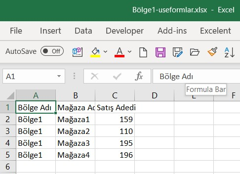
Burda ise, formatın ve
validation içeriklerinin korunduğu bir örneği görüyorsunuz.
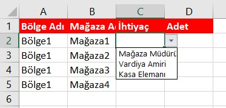
Worksheet Formdaki değişime göre bir makronun
çalışması
Bu örnekteki form çeşidi her ne kadar
worksheet formların
konusu olsa da, işin büyük kısmı makro ile yapıldığı için bunu da buraya
aldım. Bunun için de biraz veritabanı uygulamarıyla iletişim bilmek
gerekiyor, ancak ben bunu veritabanı konusu yerine bu sefer buraya
almayı tercih ettim. Örnek dosyaları
burdan indirebilirsiniz. Access
dosyayı uygun bir klasöre koyup aşağıdaki constr değişkenindeki konumunu da
değiştirmeniz gerekmektedir.
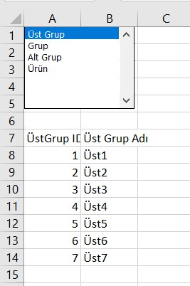
Listbox,'a sağ tıklayıp Control sekmesine geldim ve Input Range ile Cell
link özelliklerini aşağıdaki gibi değiştirdim.
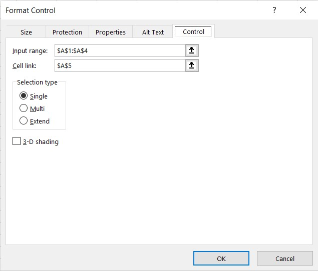
A1-A5 arasını tamamen beyaz yaparsanız hiç görünmezler, hatta listboxı
tamamen A1-A5'i kapatacak şekilde üzerine de taşıyabilirsiniz./p>
Her hücre içinde comment olarak eklenmiş SQL bulunmakta. Listboxtan bir
ürün seçildiğinde A5'e bu seçimin indeksi gelmekte, buna göre de ilgili
SQL çalıştırılmaktadır.
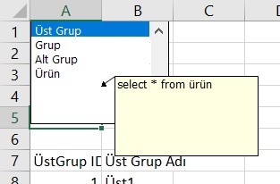
Sub ListBox1_Change()
Dim con As New ADODB.Connection
Dim rs As New ADODB.Recordset
Dim adet As Integer
Dim constr As String
Dim strsql As String
'Static şifre As String
On Error GoTo hata
strsql = Cells([A5].Value, 1).Comment.Text
If strsql = "" Then Exit Sub
'şifresi olan bir databse ise aşağısı uncommentsiz
'If şifre = "" Then
' şifre = InputBox("şifreyi girin")
'End If
constr = "Provider = Microsoft.ACE.OLEDB.12.0; data source=C:\falanfilanklasör\vbausrformsql.accdb"
con.Open ConnectionString:=constr
rs.Open Source:=strsql, ActiveConnection:=con, CursorType:=adOpenKeyset, LockType:=adLockOptimistic
rs.MoveFirst
[a7].Select
Selection.CurrentRegion.ClearContents 'bir önceki run sonucunu temizleyelim
'önce başlıkları getirelim
For i = 0 To rs.Fields.Count - 1
ActiveCell.Offset(0, i).Value = rs.Fields(i).Name
Next i
ActiveCell.Offset(1, 0).Select
'şimdi datayı alalım
ActiveCell.CopyFromRecordset rs
rs.Close
con.Close
Set rs = Nothing
Set con = Nothing
Exit Sub
hata:
MsgBox Err.Description
Set rs = Nothing
Set con = Nothing
End Sub
TEST SORULARI
Son Sorumuz şuymuş:Bir metindeki tüm noktaları yoketmek istiyorsunuz. Hangi fonksiyonu kullanırdınız?
Soru:
A şıkkı:
B şıkkı:
C şıkkı:
D şıkkı:
Doğru Cevap
Etiketler
İlişkili konuyu seç
25215
Label
* Sorulara verilen yanlış cevaplardaki esprili yorumlarım için hoşgörünüze sığınıyorum.
* Test ve Ödevlerdeki bazı detaylar burada anlatılmamış olabilir. Bunları kendiniz araştırıp bulmalısınız.
* Birden çok konuya ait içeriği olan ödevler var. Algoritmik açıdan bakıldığında o an en uygun konuya adreslenmiştir.
Dikkat! Bir soruya cevap verdikten sonra geri dönemezsiniz.
5
0
0
0
Soru No:37.
Aşağıdakilerden hangisi hata alır?
ÖDEVLER
5
0
Ödev No:54.
Zaman zaman Toad, AQT, SQL Developer gibi araçlardan çektiğiniz büyük dataları Excel'e yapıştırmanız gerekmektedir. Çektiğiniz veri seti hacimliyse Excele almak zahmetli olabilir. Öyle bir form tasarlayın ki, içine SQL metni girdiğinizde veya bir buton aracılığı ile hazır bir SQL dosyasını import ettiğinizde sorgunuz çalışsın ve sonucu doğrudan Excele getirsin. Duruma göre yeni dosya veya yeni sayfa açsın, duruma göre mevcut hücrenin olduğu yere yapıştırsın. Şuan sadece tasarımı ve Veritabanı işlemleri dışındaki işlemleri yapsın Veritabanı kodlamasını veritabanı ödevlerinde yapacaksınız. Çalıştır butonuna basınca seçilen hedef alana göre bi mesaj çıksın.
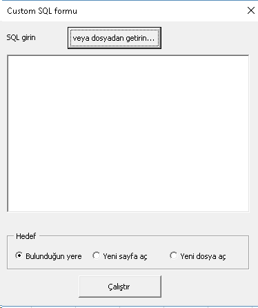
Ekli dosyayı indirmek için tıklayınız.
Çözüme bakın(Başka türlü de çözülebilir tabi, bu benim çözümüm.)
Örnek dosyayı ekte bulabilirsiniz. Kodlar aşağıdaki gibidir.
'Çalıştır butonunun kodu
Private Sub CommandButton2_Click()
On Error GoTo hata
Me.Hide 'formu gizliyoruz
strSQL = frmSQL.TextBox1.Text
If Me.optActivecell.Value = True Then
MsgBox "aktif hücreden itibaren yapıştırılacak"
ElseIf Me.optYenisayfa.Value = True Then
Worksheets.Add
MsgBox "yeni sayfa yaratıldı, buraya yapıştırılacak"
Else
Workbooks.Add
MsgBox "yeni dosya yaratıldı, buraya yapıştırılacak"
End If
Unload frmSQL 'formu bellekten siliyoruz
Exit Sub
hata:
MsgBox Err.Description
End Sub
Form üzerindeki SQL dosya getirici butonun kodu ise şöyledir:
Private Sub CommandButton1_Click()
Dim fd As FileDialog
Dim fso As Object 'fso
Dim ts As Object 'TextStream
Set fd = Application.FileDialog(msoFileDialogFilePicker)
If fd.Show = 0 Then
Exit Sub
End If
Set ts = CreateObject("Scripting.FileSystemObject").OpenTextFile(fd.SelectedItems(1))
içerik = ts.ReadAll
ts.Close
Set ts = Nothing
Set fso = Nothing
Me.TextBox1.Text = içerik
End Sub